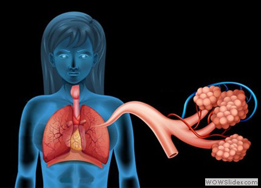
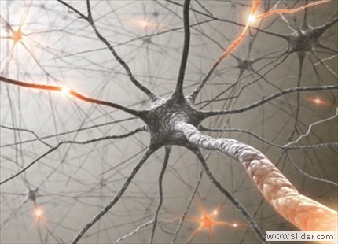
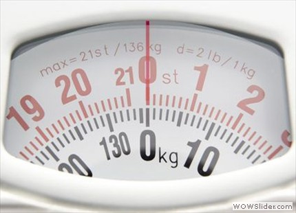
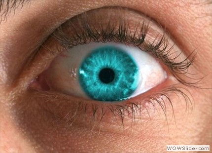

תכנית לימודים במדעי המוח
תכנית לימודים חדשנית במדעי המוח, המבוססת על לימוד באמצעות אנלוגיות. האנלוגיות הן דרכי חשיבה הנהוגות
בתחומי דעת רבים במדע ובהנדסה. השימוש בהן מאפשר הבנה מעמיקה של תופעות, הכללה של פתרונות, והעברת ידע
מתחום הדעת של מדעי המוח למדעי ההנדסה ולהיפך.
-
בזמן שינה המוח יוצר נתק ומגביל את יכולתו להפעיל את המערכת המוטורית – כדי שלא נבצע את החלומות
שלנו בפועל.
 בזמן שאנו ערים מוחנו מייצר אנרגיה בהספק של 23-10 ואט – כמו נורה.
בזמן שאנו ערים מוחנו מייצר אנרגיה בהספק של 23-10 ואט – כמו נורה.
-
השינה טובה לא רק לבריאות, אלא גם לזיכרון.
- 
המוח מנצל חמישית מתצרוכת החמצן הכוללת של הגוף.
-
המוח אחראי לייצר את תחושת הכאב בגופנו, אך אינו מרגיש כאב בעצמו.
- 
יש במוחנו 100,000,000,000 (מאה מיליארד!) תאי עצב.
- 
המוח שוקל רק 2% ממשקל הגוף.
-
75% מן המוח הם מים.
- 
בכל פעם שאנו ממצמצים המוח "שומר" את התמונה האחרונה שנקלטה בעינינו.
- הפילוסוף היווני אריסטו, שחי
לפני 2300 שנה, סבר שהלב הוא האיבר בגופנו שאחראי על החושים ועל הרגש.
responsive carousel by WOWSlider.com v6.1